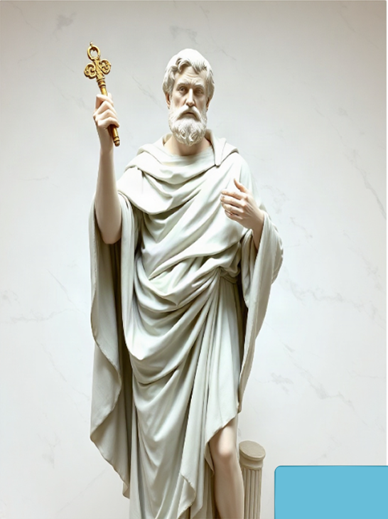

El Romano Pontífice ~
“El Pastor de toda la Iglesia, que tiene potestad plena, suprema y universal sobre ella.”
The Roman Pontiff, as the successor of Peter, is the perpetual and visible principle and foundation of unity of both the bishops and of the faithful. His authority and spiritual headship extend over the universal Church, guided by the Holy Spirit.

A lo largo de los siglos, la figura del Santo Padre ha sido el faro de luz y guía para la cristiandad. En este documento exploramos la historia del papado y su importancia fundamental en la estructura eclesial.
Desde los primeros mártires hasta los papas de la era moderna, la sucesión apostólica se mantiene como una cadena ininterrumpida de gracia y responsabilidad pastoral.